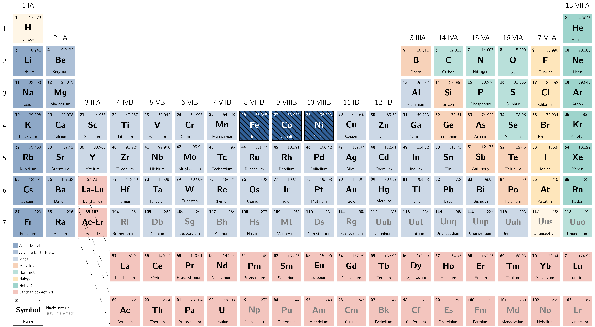
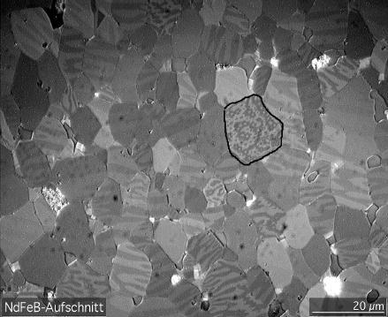

In the context of electromechanical energy conversion devices, the importance of magnetic materials is twofold. Through their use, it is possible to obtain large magnetic flux densities with relatively low levels of magnetising force.
As magnetic forces and energy density increase with increasing flux density, this effect plays a large role in the performance of energy-conversion devices.
In addition, magnetic materials can be used to
For example, in a transformer, they are used to maximise the coupling between the windings as well as to lower the excitation current [18] The current or amperes required to energise the core. Even with zero load, a transformer will draw a small amount of current due to internal loss. The excitation current is made up of two components. The real component in the form of losses that are commonly referred to as no-load losses. The second form is reactive power measured in KVAR. required for transformer operation. In electric machinery, magnetic materials are used to shape the fields to obtain desired torque-production and electrical terminal characteristics.
Therefore a trained engineer can use magnetic materials to achieve specific desirable device characteristics.
These materials are typically composed of iron and alloys of iron with cobalt, tungsten, nickel, aluminium, and other metals, are by far the most common magnetic materials. Although these materials are characterised by a wide range of properties, the basic phenomena responsible for their properties are common to them all.

Ferromagnetic materials are found to be composed of a large number of domains. [19] 
In the absence of an externally applied magnetising force, the domain magnetic moments naturally
align along certain directions associated with the
In general, material properties cannot be described analytically. They are commonly presented in graphical form as a set of empirically determined curves based on test samples.
The most common curve used to describe a magnetic material is the B-H curve or hysteresis loop which an example is shown in Fig. 1.7. Here, only the first quadrant is shown as it is the most important part when designing a machine.
In practice, each curve is obtained while cyclically varying the applied magnetising force between equal positive and negative values of fixed magnitude. Hysteresis causes these curves to be multi-valued. After several cycles the B-H curves form closed loops, which is shown in Fig. 1.9.